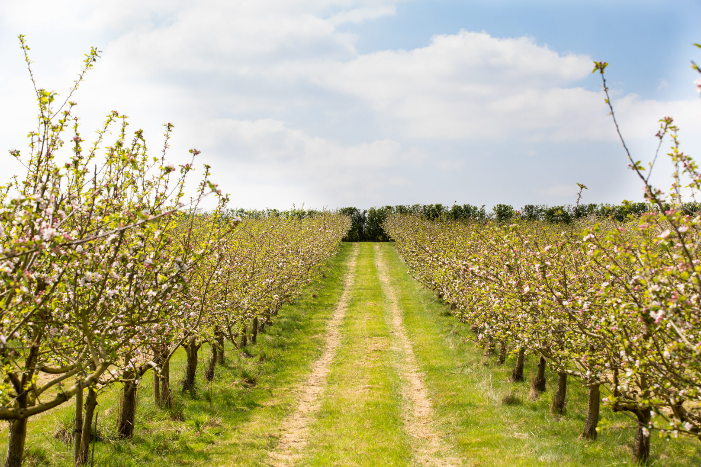

library(tidyverse)
library(scales)Project
Investigation into the relationship between honeybees and pesticides on orchards
Important
This is a final project for course 1. This will not be graded, and is intended to provide you with the opportunity to test the skills you’ve acquired throughout the course in a less structured environment. Reflection questions and rubric items can be found at the end of the project to help self-assessment.
Packages
Directions
This final project consists of an exploratory data analysis and write up of results you discovered. The data set you will be working with is called OrchardSprays. More information about this data set, and the research questions you will investigate can be found in the Introduction. Using the tools you have learned in this course, calculate summary statistics and compelling data visualizations to help answer the research question(s). Include these creations in a the style of a report outlined below, practicing writing about your findings from this exploratory data analysis.
Introduction

An orchard is a plantation of trees or shrubs that is maintained for food production. Often, pesticides are used to control various pests and disease carriers. However, an unintended consequence of using pesticides is the deterrent of honeybees. The presence of honeybees in the orchards is crucial for the production of foods and crops.
Researchers conducted an experiment to assess the potency of various pesticides in repelling honeybees. An orchard was divided into 64 squares, and each square was randomly assigned a varying amount of lime sulphur.
The response variable for the different levels of pesticides were obtained by releasing 100 bees into each square for 2 hours and measuring the decrease in volume of the solutions bees typical collect in the squares. A decrease is solution means that the honey bees are not deterred, and visiting the plants as normal (McNeil 1977).
A data table for this experiment can be seen below:
| variable | description |
|---|---|
| rowpos | numeric row of the design |
| colpos | numeric column of the design |
| treatment | treatment level (A having the highest level … H having no lime sulphur) |
| decrease | decrease in volume of the solutions |
Research Question: You are tasked to investigate which treatment(s) of pesticides produced the highest decrease in solution. Additionally, you are interested in seeing if, regardless of treatment, the first four rows of the orchard showed more or less of a decrease in solutions than the last four rows.
Hint: you may need to make a new variable in order to answer the second research question.
Important
 - Version control with GitHub
- Version control with GitHub
This project also provides you with the opportunity to practice using version control, often expected to be used in a real-world context. We challenge you to Render; Commit; and Push after each visualization or summary statistics you create. If you are working on a project with more than one contribute, make sure that you Pull before making any progress to ensure your project matches up with the project repository.
Methods
The methods section should include visualizations and summary statistics relevant to your research question(s). These should be accompanied with descriptions / takeaways from your creations.
Discussion
In this section you’ll include a summary of what you have learned about your research question and will discuss your overall findings and describe the key results from your analysis.
Self rubric
Below are a collection of rubric items to self assess your report.
Rubric items
Report should include 1-2 visualizations with accompanying summary statistics per research question.
All visualizations should be appropriately labeled, including having a title and customized axes.
Only plots and summary statistics that are relevant to the research question(s) should be created.
Should come to the conclusion that the more potent the pesticide, the less decrease in volume of solution.
Should come to the conclusion that regardless of treatment, the mean decrease is volume of solution is roughly 10 more for the top 4 rows than the bottom 4 rows.
References
McNeil, D. R. 1977. Interactive Data Analysis: A Practical Primer. A Wiley-Interscience Publication. Wiley. https://books.google.com/books?id=fuBQAAAAMAAJ.